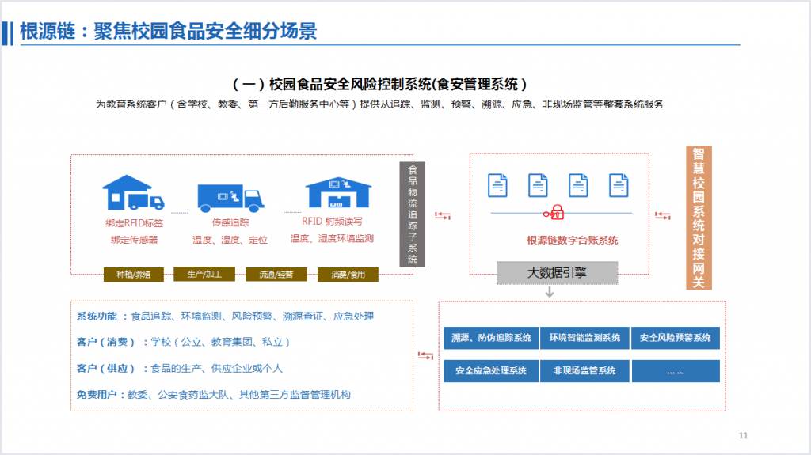
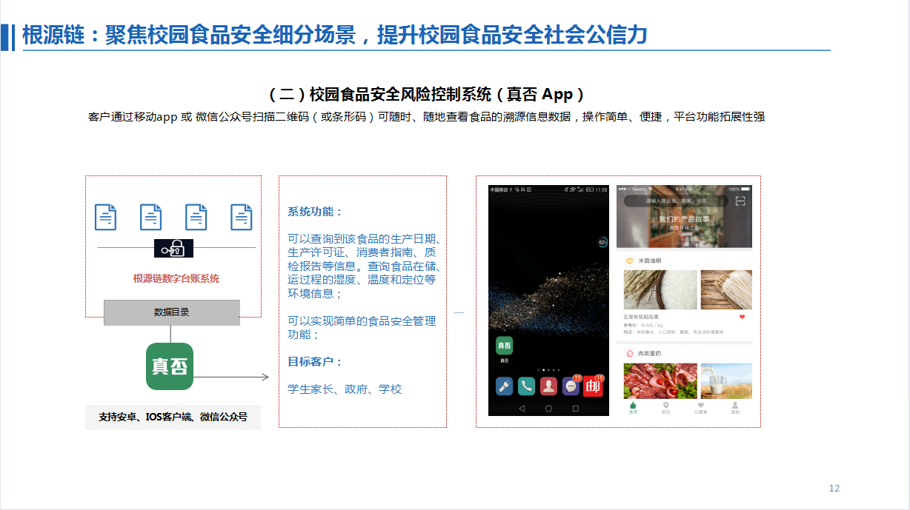
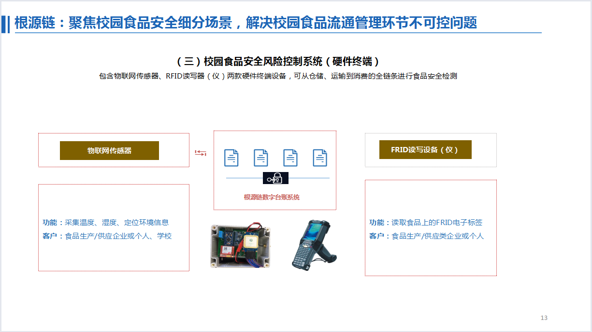

记者专访 || 关注to B的细分场景应用，WeShare链想用区块链构建一个校园食品安全风控系统
发布时间：2017/06/02 热门推荐 浏览次数：418
卡隆拥有丰富的从业经验，横跨金融、媒体、农业等行业。他的第一个创业公司是一个媒体营销公关公司泽天传播，现在的年营收达到了千万级别。
第二个创业公司是一家农业公司，通过在东北租借耕地，为北京市的一些学校供应大米。在供应大米的过程中，他接触了很多农业、食品专家以及学校、家长等，他发现，优质的农产品有很多，但是各环节之间却缺乏良好的信任。因此，他萌生了促进食品安全改善的农业创业想法。
WeShare链 CEO 卡隆
卡隆接触区块链是在2014年底，当时他从事金融，帮助一些知名金融机构推广业务、提升注册量，过程中便接触到了比特币，了解了区块链的概念。2016年初，区块链逐渐火热起来，区块链的时间戳、数据不可篡改性等等特性与他们的想法不谋而合，他们开始思考未来的应用落地，探索能不能让区块链与农业相结合，促进食品安全的改善。
在2016年8月的中国区块链产业大会上，卡隆作为组织方联合了农业部、中粮、农科院、北大公共卫生学院等共同探讨了区块链解决这个问题的可能性，他们认为是可行的，于是经过一段时间的筹备，2016年12月，他们成立了区块链溯源平台WeShare链。
WeShare链团队的技术合伙人王立仁在IT领域拥有资深经验，他是中国区块链研究联盟副秘书长、还曾任factom公司的副总裁；另外一位联合创始人李哲平现任当代金融家杂志社执行社长兼主编。

WeShare链团队
|| 食品安全痛点
食品安全一直是一个敏感的社会话题，食品溯源是一个比较好的解决方式之一。在国外，如日本、美国70%的食品都有溯源，能够找到责任方。而在中国，这个比例不到5%，市场远远比西方落后。
核心问题不是在于没人做，而是做了很多年都做不起来。目前的溯源方式大部分是在食品上贴上二维码，消费者可以通过特殊的查询渠道或查询机器扫码查询。这存在着两个问题，首先系统自说自话，数据可以篡改，二维码可以复制，不具备可信赖度；其次是激励不足，没人愿意主动去扫码。

这样的溯源方式不能对现有的食品有很好的追溯和保障，无法满足企业或者消费者对于溯源的需求，也无法适应移动互联网下溯源方式的革新。
这时候他们想到了区块链。如果用区块链特性，首先数据一旦上链便无法篡改，保证了数据的可信度；其次时间戳保证了时间的无法颠覆性。例如番茄都有固定的生长周期，然而有些生产企业会因为价格的上涨而打激素催熟抢占更多利润。如果把数据上链，便能够保证生长时间，保证食品的安全和放心。
|| 细分场景的解决方案
在选取了区块链技术作为支撑后，WeShare链给自己的定位是做一个区块链运营与服务商，通过区块链技术与物联网进行结合，推动农产品溯源、存证、辨真伪。
目前，WeShare链主要关注2B市场，在场景上他们首先选取了校园食品安全的应用场景，通过区块链构建一个校园食品安全风险控制系统。
与传统二维码不同的地方在于，他们的数据经过自主开发的硬件系统检测后再上链。具体来看，学校的食堂的食品的供应商、日供应量、供应时间有着较强的固定性，他们通过校园食品安全风险控制系统（食安管理系统），要求经过学校的食品必须贴上系统二维码，装箱的时候必须带上系统的电子线圈，装车的时候必须装上移动传感器，这些通过硬件信息检测合格后的信息全部上链。到了学校后，再通过RFID读取器，把数据读取出来，只有完成了这整个流程才能说明运到学校的食品是安全健康的。

另一方面，家长、政府等关注校园食品安全的群体可以通过“真否APP”来查询食品的来源，通过移动app或微信公众号扫描二维码（或条形码）便可查看食品的溯源信息数据，包括生产日期、生产许可证、消费者指南、质检报告；食品储运过程的湿度、温度、定位等环境信息等。

这样通过硬件的数据上传，减少人为干扰因素，保证数据的真实性，同时提供给个人用户简单的查询方式，使食品溯源成为完整闭环。
目前WeShare链溯源平台已经在北京2家学校做试点，今年计划拓展到50-100家。
在商业模式上，采用了WeShare链校园食品安全风险控制系统的学校每个收费一万元每年；同时供货企业需要付费购买我的电子线圈、传感器等硬件设备，这些购买会转换为代币，换取区块链记账空间的使用权。
WeShare链还在探索的第二个解决方案是牛肉溯源系统，预计今年9月上线。
全球牛肉市场规模达到万亿级别，然而消费者购买牛肉的风险也是较大的。在中国，有70%的牛肉都是注水牛肉。WeShare链希望能建立全球牛肉进出口追溯平台，例如给从新西兰进口的牛肉装上传感器溯源，始终进行追溯。
据卡隆介绍，WeShare链的底层区块链平台基于以太坊进行开发，共识机制是DPOS（股份授权证明机制），有加入智能合约，近期将会进行开源，方便试用企业的参与。
计算节点包括黑龙江国土资源厅、国家地理信息测绘局、中国教育电台健康台等，既有地方、国家部委、事业单位、媒体，没有形成隶属关系，各自有利益诉求，保证链上的数据无法篡改。对于每个记账节点有所收费，给予节点记账权力。预计未来2-3个月内将有30万元左右的营收。未来也许会有企业加入节点企业，也会做ICO带进来一些记账单位，但原则上不超过30个。
节点权限控制上平台提供记账权，所有权由记账节点共享，节点对于平台本身有一票否决权，来保证数据的不可篡改。
交易性能上，由于WeShare链的节点数不多（40个内），所以运算速度较快，TPS可以达到1万以上。
目前平台上已经有数据在跑，卡隆称他们的区块链平台完成得较早，但是食品安全追溯子系统、二维码、电子现签、传感器一整套数据采集系统还在推进，应用层app管理后台也在研发当中；同时数据要向教委、第三方监管机构、公安部门同步分享以方便监管，这些方面需要耗费比较大的时间。
除了学校，WeShare链还与10多个中小企业也达成了合作。例如顺心食品、快乐的蛋等，共同合作食品的追溯。
前期WeShare链是内部融资，最近正在准备进行一轮准天使轮融资。
融资情况：
已融：天使轮（估值五千万）
下一轮：待定中
招聘需求：
岗位名称：
品牌总监、大区销售经理、前端软件开发工程师、硬件开发工程师、软件测试工程师、平台软件开发工程师
坐标：北京
本文来源：涂鸦区块链